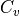
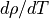
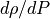
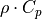
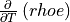
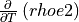
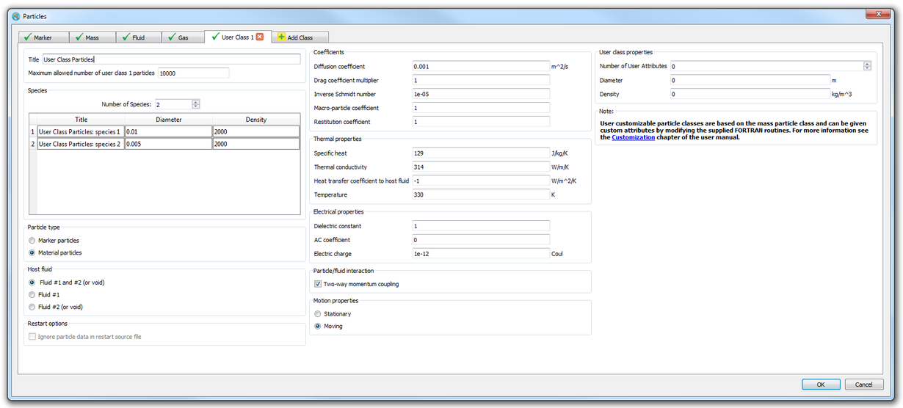

Customization¶
Important
Flow Science, Inc. is not responsible for customizations added by the user. FLOW-3D support includes general guidance on customizing, but does not include specific information on modifying FLOW-3D for special uses. FLOW-3D support does not include troubleshooting users’ modifications.
General Customization Information¶
The FLOW-3D distribution includes a variety of FORTRAN source subroutines that allow the user to customize FLOW-3D to meet their requirements. The FORTRAN subroutines provided allow the user to customize boundary conditions, include their own material property correlations, specify custom fluid forces (i.e., electromagnetic forces), add physical models to FLOW-3D , and more. Several “dummy” variables have been provided in the input file namelists that users may use for custom options. A user definable namelist has also been provided for customization. Makefiles are provided for Linux and Windows distributions and Visual Studio solution files are provided for Windows distributions to allow users to recompile the FLOW-3D code with their customizations.
Note
- To run the Custom Double Precision version via the FLOW-3D graphical interface, select the Prompt When Queued option in the Version Options area on the dock widget. Then, when prompted for the version, choose . Alternatively, this can be set as the default in the for local and remote machines.
- To run a custom version via batch mode or command prompt, the environment
variable F3D_VERSION must be set to
prehydfor customized double precision.
Customizing FLOW-3D on Windows¶
The following software is required to customize FLOW-3D on Windows:
- Microsoft Visual Studio 2010 Professional Edition or Microsoft Visual Studio 2013 Professional Edition
- Intel FORTRAN 16.0.1
If a command line build environment is preferred, consider installing Intel FORTRAN 16.0.1 and Windows Platform SDK. More information on the system requirements for Intel FORTRAN 16.0.1 can be found the documentation provided with the compiler.
Visual Studio solution files for Visual Studio 2010 Professional
Edition are located in the prehyd directory. The solution files are
named respectively as custom_double_vs2010.sln.
The solution files are used to build the solver executable from within Visual
Studio. The FORTRAN source files have the extension .F90 and are located
in the C:\flow3d\v12.0\prehyd directory. The object files are binary
files that cannot be edited, have the extension .OBJ, and are compiled
versions of the source files.
Visual Studio Solution Files: Compiling and Linking¶
Visual Studio solution files are used by Visual Studio to
keep track of which files are needed to build the executable. They contain a
list of all the files in the project and a list of dependencies. Dependencies
are used to keep track of what files are affected by changes to a particular
file. The Solution Explorer in Visual Studio contains a
list of all the files - source files, object files, modules, and libraries -
necessary to build the executable. Files are arranged in alphabetical order.
To edit a source file *.F90, double-click on that file in the
Solution Explorer and it will open in a context-sensitive editing
window.
After changes are made to a source file, save it and rebuild the executable by
selecting Build Solution from the Build menu. Please
use the Visual Studio Configuration Manager to set the project to
Release mode and x64 mode. This will compile the file
you modified and create a new executable. A new hydr3d.exe executable
will be created and placed in the C:\flow3d\v12.0\prehyd subdirectory.
Building¶
To compile and link hydr3d.exe, open
the solution file custom_double_vs2010.sln in prehyd/. Use the
Visual Studio Configuration Manager to set the project to
Release mode and x64 mode. Make necessary changes to
the source code, save and then select Build Solution from the
Build menu.
Adding New Source Files¶
There may be occasions when a customization requires additional source code which is not distributed with FLOW-3D . Users can petition Flow Science for proprietary, non-distributed source code on these occasions. If this request is granted and additional source code is provided by Flow Science, the source code must be added to the Solution Explorer and the corresponding object files must be removed.
For example, suppose the HVEVAL.F90 file was provided by Flow Science.
Once this file has been received, it would first be placed in the
source/utility directory. Then open the appropriate solution file in
Visual Studio and remove the HVEVAL.OBJ file from the
Solution Explorer. Then add the HVEVAL.F90 file to the
solution file by selecting .
This opens a dialog box that allows you to select HVEVAL.F90. Click
OK. HVEVAL.F90 can now be modified and will automatically be
compiled and linked each time the solution is built.
Customizing FLOW-3D on Linux Platforms¶
Customizations on a Linux PC can be accomplished using Intel FORTRAN 16.0.1. No additional software is required.
Customizable FORTRAN source files have been placed in the directory
source. Subroutines unique to prep3d are in the directory
source/prep3d, while those unique to hydr3d are to be found in
the directory source/hydr3d. Subroutines common to both are provided
in the directory source/utility. The files in directory
source/comdeck are include files which must be modified by
the user.
Makefiles have been included to automate the tasks of compiling and linking. After modifying one or more source files, the make utility needs to be run from the top level of the FLOW-3D home directory. To compile and link the solver from a shell prompt, change to the top level of the FLOW-3D home directory and type:
make
Customizable Source Directory Structure¶
The directory structure for FLOW-3D customizable subroutines and standard distribution executables is as follows:
-- double-- hydr3d
-- prehyd-- comdeck
prep3d
hydr3d
utility
-- source-- comdeck
prep3d
hydr3d
utility
The directory /opt/flow3d/v12.0/double contains the official release of the
(non-customizable) solver hydr3d. The
customizable source code is in the directory
/opt/flow3d/v12.0/prehyd.
Under the customizable directory titled source, there are four
subdirectories. Subroutines shared by the preprocessor and the solver are
located in directory titled utility. Subroutines used only by the
preprocessor are in the directory titled prep3d and those used only by
the solver are in hydr3d.
FORTRAN Include Statements¶
In FLOW-3D subroutines, common blocks and dimension statements for global
variables are in files in directory titled comdeck. These
comdeck files are essentially “header files,” and are incorporated in
the subroutines by use of “include” statements. A typical “include” statement
might look like the following:
include '../comdeck/params.f90'
At compile time, the FORTRAN source in the comdeck file is in-lined in
the subroutine containing the “include” statement. This provides for
consistent definition of common blocks and dimension statements. There are
also comdeck files that contain FORTRAN source code that is used frequently, for
example, calculating the indexes for a particular cell’s neighbors. In these
cases, the comdeck file is just a simple way of in-lining commonly-used source
code.
Do not change common blocks, modules or parameters in comdeck
files since they have already been compiled into the provided routines as object
files. Changing these definitions results in inconsistencies which make FLOW-3D
behave in unpredictable ways. A user-definable namelist USRDAT and
common block cbusr have been provided, and these may be changed as
long as all subroutines referencing these are also recompiled (all routines
referencing these have been provided as source files).
Additional common blocks may be defined in new comdeck files, which
may be included in source files as needed.
Warning
Do not change common blocks, modules or parameters in comdeck
files since they have already been compiled into the provided routines as object
files. Changing these definitions results in inconsistencies which make FLOW-3D
behave in unpredictable ways.
Concept of Sub-domains¶
When defining arrays in FLOW-3D , it is useful to understand the concept of
solution sub-domains. The term sub-domain is used in FLOW-3D to refer to a subset
of the total computational domain where arrays relevant to that region are
defined. For example, arrays storing fluid quantities (pressure, velocity,
etc.) are defined on the fluid sub-domain which comprises of cells containing
fluid. Likewise, arrays storing quantities that are relevant only in solid
regions are defined on the solid sub-domain which consists of cells that are
fully or partially blocked. Typically, solid sub-domain indices/filenames are
named by adding an sd suffix to the corresponding fluid sub-domain
index/filename. Sub-dividing the computational domain into solid and fluid
solution sub-domains and defining arrays only where they are necessary, can
lead to significant improvements in memory usage as well as computational time.
Important Comdeck Files¶
The following list describes some of the include files commonly used in FLOW-3D subroutines and functions.
| FILE | DESCRIPTION |
|---|---|
ijk.f90 |
computes 3D fluid sub-domain array index ijk for cell (i,j,k) |
ijk2str.f90 |
computes 3D structured array index ijk_str for fluid sub-domain cell indexed by ijk |
ijksd.f90 |
computes 3D solid sub-domain array index ijksd for cell (i,j,k) |
ijksd2str.f90 |
computes 3D structured array index ijk_str for solid sub-domain cell indexed by ijksd |
mijk.f90 |
computes 3D fluid sub-domain array indices imjk, ijmk and ijkm for cells (i-1,j,k), (i,j-1,k) and (i,j,k-1) |
mijksd.f90 |
computes 3D solid sub-domain array indices imjksd, ijmksd and ijkmsd for cells (i-1,j,k), (i,j-1,k) and (i,j,k-1) |
pijk.f90 |
computes 3D fluid sub-domain array indices ipjk, ijpk and ijkp for cells (i+1,j,k), (i,j+1,k) and (i,j,k+1) |
pijksd.f90 |
computes 3D solid sub-domain array indices ipjksd, ijpksd and ijkpsd for cells (i+1,j,k), (i,j+1,k) and (i,j,k+1) |
phiou.f90 |
contains i/o file unit assignments |
dumn.f90 |
contains “dummy” integer and floating point input variables: idum1...idum25, dum1...dum25, and arrays intdum(1:1000) and fpdum(1:1000) |
Subroutines Included in Distribution¶
The following list describes some of the subroutines included with the FLOW-3D distribution. The actual subroutines included may vary for individual distributions.
User Customizable Namelist¶
| DIRECTORY | FUNCTION | DESCRIPTION |
|---|---|---|
prep3d |
prusrd | preprocesses user-customizable namelist USRDAT |
Boundary Conditions¶
| DIRECTORY | FUNCTION | DESCRIPTION |
|---|---|---|
utility |
bc | evaluates external mesh boundary conditions |
Fluid Properties¶
| DIRECTORY | FUNCTION | DESCRIPTION |
|---|---|---|
utility |
mucal | evaluates viscosity |
utility |
thcndf | evaluates thermal conductivity of fluid #1 |
utility |
thcndf.F90/thcndf2 |
evaluates thermal conductivity of fluid #2 |
utility |
cvcal | evaluates fluid specific heat,  |
utility |
elcndf | evaluates macroscopic electric conductivity of fluid #1 or two-fluid mixture |
utility |
elcndf.F90/elcndf1 |
evaluates microscopic electric conductivity of fluid #1 |
utility |
elcndf.F90/elcndf2 |
evaluates microscopic electric conductivity of fluid #2 |
utility |
rhocal | evaluates cell density from microscopic values |
utility |
rho1cl | evaluates microscopic density for fluid #1 |
utility |
eos.F90/rho2cl |
evaluates microscopic density for fluid #2 using either the user-defined density for incompressible fluid, or equation-of-state for gas |
utility |
eos.F90/rho2cl_nc |
evaluates microscopic density for vapor and non-condensable gas mixture in fluid #2 using the mixtre equation-of-state |
utility |
eos.F90/rhofl2_cal |
extract microscopic density for fluid #2 from the fluid #1/fluid #2 mixture density |
utility |
eos.F90/rf2cal |
evaluate mass-averaged gas constant for vapor and non-condensable gas mixture in fluid #2 |
utility |
dr1dt | evaluates  for fluid #1 |
utility |
dr1dts | evaluates for solidified fluid #1 |
utility |
eos.F90/dr2dt |
evaluates for fluid #2 using either the user-defined density for incompressible fluid, or equation-of-state for gas |
utility |
eos.F90/dro2cl |
evaluates  for compressible fluid #2 using equation-of-state |
utility |
rhoecl | evaluates cell macroscopic energy of fluid #1 |
utility |
rhoecl.F90/rhoecl_fluid2 |
evaluates cell macroscopic energy of fluid #2 |
utility |
e1cal | evaluates specific internal energy for fluid #1 |
utility |
e2cal | evaluates specific internal energy for fluid #2 |
utility |
e2cal.F90/e2cal_nc |
evaluates specific internal energy for vapor and non-condensable gas mixture in fluid #2 |
utility |
eos.F90/peos |
evaluates gas pressure from equation of state for fluid #2 |
utility |
eos.F90/seos |
evaluates speed of sound for compressible fluid #2 |
utility |
fliqcl | evaluates liquid fraction |
utility |
fliqcl.F90/fliqcl_fluid1 |
evaluates liquid fraction for particles made of fluid #1 |
utility |
sigcal | evaluates surface tension coefficient |
utility |
cangcal | evaluates surface tension contact angle at walls |
utility |
rho1cs | evaluates density of fluid #1 |
utility |
teval | evaluates fluid #1 temperature from the internal energy and density |
utility |
teval_fluid1 | evaluates fluid #1 temperature from the internal energy and density assuming ; used for fluid particles |
utility |
teval_fluid2 | evaluates fluid #2 temperature from the internal energy and density |
hydr3d |
heatfl | adds heat sources to fluid |
hydr3d |
flhtccl | calculates the heat transfer coefficient between fluid #1 and #2 |
General Moving Objects (GMO) Model¶
| DIRECTORY | FUNCTION | DESCRIPTION |
|---|---|---|
hydr3d |
mvbfrc1_usr | specify time variation of total control force and/or total control torque exerting on a moving object under coupled motion. The subroutine is called for each moving object at each time step in the simulation |
hydr3d |
mvbfrc2_usr | specify time variation of multiple control forces on a moving object under coupled motion. The subroutine is called for each moving object at each time step in the simulation |
hydr3d |
mvbvel_usr | specify time variation of velocity for a moving object under prescribed motion. The subroutine is called for each moving object at each time step in the simulation |
Vapor Properties¶
| DIRECTORY | FUNCTION | DESCRIPTION |
|---|---|---|
utility |
psat | calculates vapor pressure or temperature from the user-defined saturation curve |
Cavitation Model¶
| DIRECTORY | FUNCTION | DESCRIPTION |
|---|---|---|
utility |
pcavcl | calculates cavitation pressure from temperature |
hydr3d |
cav_prod_cal | calculates cavitation production and dissipation rates |
Component Thermal Properties¶
| DIRECTORY | FUNCTION | DESCRIPTION |
|---|---|---|
utility |
rcwth | evaluates  and thermal conductivity for the part of each cell occupied by geometry components |
hydr3d |
heatob | Adds heat sources to geometry components. |
Component and Subcomponent Definitions¶
| DIRECTORY | FUNCTION | DESCRIPTION |
|---|---|---|
utility |
fcn0 | evaluates subcomponent functions (component regions, fluid regions, etc.) |
Heat Transfer Coefficients¶
| DIRECTORY | FUNCTION | DESCRIPTION |
|---|---|---|
hydr3d |
qeval | evaluates fluid/solid heat transfer coefficient |
hydr3d |
hfobcl | metal-foam heat transfer coefficient for the lost foam model |
hydr3d |
hobs1cl | calculates heat transfer coefficient for fluid #1 and solid |
hydr3d |
hobs2cl | calculates heat transfer coefficient for fluid #2 and solid |
hydr3d |
rhocv | calculates cell derivative  for fluid #1 using ‘n+1’ time level variables, assuming density is constant |
hydr3d |
rhocv.F90/rhocvn |
calculates cell derivative for fluid #1 using ‘n’ time level variables, assuming density is constant |
hydr3d |
rhocv.F90/rhocv2 |
calculates cell derivative  for fluid #2 using ‘n+1’ time level variables, assuming density is constant |
hydr3d |
rhocv.F90/rhocv2n |
calculates cell derivative for fluid #2 using ‘n’ time level variables, assuming density is constant |
utility |
hveval | evaluates fluid-void and solid-void heat transfer coefficients |
Mass Transfer Coefficients¶
| DIRECTORY | FUNCTION | DESCRIPTION |
|---|---|---|
hydr3d |
smtrcl | evaluates solid/fluid mass transfer coefficient for the solid dissolution model |
Phase Change Mass Flux¶
| DIRECTORY | FUNCTION | DESCRIPTION |
|---|---|---|
hydr3d |
phchg_mass_flux | evaluates mass flux due to evaporation/condensation for the phase change model |
Dynamic Droplet Size in Two-Phase Drift-flux Model¶
| DIRECTORY | FUNCTION | DESCRIPTION |
|---|---|---|
hydr3d |
dsize_cal | evaluates the rates of droplet//bubble coalescence and breakup |
Sludge Settling Velocity¶
| DIRECTORY | FUNCTION | DESCRIPTION |
|---|---|---|
utility |
sldg_uset | evaluates the settling velocity of sludge in sludge model |
Drag/Porous Media Model¶
| DIRECTORY | FUNCTION | DESCRIPTION |
|---|---|---|
utility |
drgcst | drag contribution applied everywhere in the fluid domain |
utility |
pcapcl | evaluate capillary pressure in unsaturated porous media |
utility |
pcapcl_vg | evaluate capillary pressure in unsaturated porous media for Van Genuchten model |
Bottom Shear Stress in Shallow Water Model¶
| DIRECTORY | FUNCTION | DESCRIPTION |
|---|---|---|
utility |
drgcoef | calculation of shear stress at the bottom of reservoir for the shallow water model |
Mass Source Model¶
| DIRECTORY | FUNCTION | DESCRIPTION |
|---|---|---|
hydr3d |
srcal | evaluates mass sources and sinks |
Turbulence Models¶
| DIRECTORY | FUNCTION | DESCRIPTION |
|---|---|---|
hydr3d |
tkecon | converts buoyant and production terms to energy and dissipation terms |
hydr3d |
tkewbc | evaluates turbulent energy and dissipation from logarithmic law of the wall |
Sediment Scour Model¶
| DIRECTORY | FUNCTION | DESCRIPTION |
|---|---|---|
hydr3d |
scour_bedload_rate | computes bedload transport rate |
hydr3d |
scour_critic | computes the critical Shields parameter |
hydr3d |
scour_diameter | computes D50 particle size |
hydr3d |
scour_lift | evaluates lifting velocity of sediment from packed bed interface for sediment scour model |
hydr3d |
scour_uset | function for modeling scour settling velocity |
Combustible Object Model¶
| DIRECTORY | FUNCTION | DESCRIPTION |
|---|---|---|
hydr3d |
combust_sld | computes combustion reaction rate for combustible component |
Elasto-visco-plastic Fluids¶
| DIRECTORY | FUNCTION | DESCRIPTION |
|---|---|---|
utility |
yieldcl | evaluates yield stress |
utility |
emodcl | evaluates elastic modulus |
hydr3d |
elstc_custom | evaluates stress increment per unit of time, in units of stress/time, as an additional source term in stress trasnsport equations for visco-elastic fluids |
Fluid-structure Interaction (FSI) and Thermal Stress Evolution (TSE) Models¶
| DIRECTORY | FUNCTION | DESCRIPTION |
|---|---|---|
hydr3d |
blkmodele | evaluates FSI component bulk modulus |
hydr3d |
blkmodtsele | evaluates solidified fluid bulk modulus |
hydr3d |
elastmodele | evaluates FSI component elastic modulus |
hydr3d |
elastmodtsele | evaluates solidified fluid elastic modulus |
hydr3d |
poissonrele | evaluates FSI component poisson ratio |
hydr3d |
poissonrtsele | evaluates solidified fluid poisson ratio |
hydr3d |
shrmodele | evaluates FSI component shear modulus |
hydr3d |
shrmodtsele | evaluates solidified fluid shear modulus |
hydr3d |
rhobsele | evaluates FSI component density |
hydr3d |
thexobsele | evaluates FSI component thermal expansion coefficient |
hydr3d |
yldstrele | evaluates FSI component yield stress |
hydr3d |
yldstrtsele | evaluates solidified fluid yield stress |
Electro-mechanics Model¶
| DIRECTORY | FUNCTION | DESCRIPTION |
|---|---|---|
hydr3d |
fpsi.F90/dfdpsi |
calculates the derivative of charge density with respect to zeta-potential. The Boltzmann distribution is used for charge density and is calculated in function fpsi with single valence assumed |
hydr3d |
eforcal | evaluates forces on fluid due to electric field effects; includes forces on charged fluid and dielectrophoresis forces |
hydr3d |
fpsi.F90/fpsi |
calculates the charge density distribution used in the electro-osmosis model. Here Boltzmann distribution with single valence is used to solve for zeta-potential. Users are allowed to provide other different distribution here |
Non-Inertial Reference Frame (NIRF) Model¶
| DIRECTORY | FUNCTION | DESCRIPTION |
|---|---|---|
utility |
motion | allows a general specification of the motion of the non-inertial reference frame |
Lagrangian Particle Model¶
| DIRECTORY | FUNCTION | DESCRIPTION |
|---|---|---|
hydr3d |
particle_usr_force | specifies an additional force on a moving material particle. The subroutine is called for each material particle at each time step in the simulation |
hydr3d |
particle_usr_source | places user-defined particles in the computational domain. The subroutine is called at each time step in the simulation |
hydr3d |
particle_usr_vel | specifies particle velocity, overriding the velocity calculated by the solver. The subroutine is called for each particle at each time step in the simulation |
hydr3d |
void_2particle | places gas particles in the fluid in place of the collapsed void regions. The subroutine is called at each time step in the simulation when the Gas Particle model is turned on, NP_GAS > 0 |
Special Models¶
| DIRECTORY | FUNCTION | DESCRIPTION |
|---|---|---|
hydr3d |
forcal | for addition of custom fluid forces such as electromagnetic forces |
utility |
velobs | evaluates tangential velocity for web-type moving objects |
hydr3d |
qsadd | evaluates scalar sources/sinks, and also may be used for adding general models and output to the solver |
Important Variables¶
Existing Variables¶
The following list describes some of the FORTRAN variables commonly used in FLOW-3D subroutines and functions.
| VARIABLE | DESCRIPTION |
|---|---|
i |
cell index in x-direction |
j |
cell index in y-direction |
k |
cell index in z-direction |
ijk_str |
3D cell index in structured domain |
ijk |
3D cell index in fluid sub-domain |
ijksd |
3D cell index in solid sub-domain |
ipjk |
cell to right of cell ijk |
ipjksd |
cell to right of cell ijksd |
imjk |
cell to left of cell ijk |
imjksd |
cell to left of cell ijksd |
ijpk |
cell to back of cell ijk |
ijpksd |
cell to back of cell ijksd |
ijmk |
cell to front of cell ijk |
ijmksd |
cell to front of cell ijksd |
ijkp |
cell to top of cell ijk |
ijkpsd |
cell to top of cell ijksd |
ijkm |
cell to bottom of cell ijk |
ijkmsd |
cell to bottom of cell ijksd |
iprl |
first real cell index in x-direction |
iprr |
last real cell index in x-direction |
jprf |
first real cell index in y-direction |
jprbk |
last real cell index in y-direction |
kprb |
first real cell index in z-direction |
kprt |
last real cell index in z-direction |
imax |
total number of cells x-direction including boundary cells |
jmax |
total number of cells y-direction including boundary cells |
kmax |
total number of cells z-direction including boundary cells |
im1 |
next to last cell in x-direction, rightmost real cell for all right boundary types except pressure boundaries and periodic boundaries |
im2 |
2nd to last cell in x-direction, rightmost real cell for right pressure boundaries and periodic boundaries |
jm1 |
next to last cell in y-direction, backmost real cell for all back boundary types except pressure boundaries and periodic boundaries |
jm2 |
2nd to last cell in y-direction, backmost real cell for back pressure boundaries and periodic boundaries |
km1 |
next to last cell in z-direction, upmost real cell for all top boundary types except pressure boundaries and periodic boundaries |
km2 |
2nd to last cell in z-direction, upmost real cell for top pressure boundaries and periodic boundaries |
nbl |
index of the current mesh block |
nblcks |
total number of mesh blocks |
t |
time |
delt |
time-step size |
ztest |
=1.0e-20, a small real number slightly greater than zero |
em6 |
=1.0e-6, test value for completely blocked cell |
emf |
=1.0e-6, test value for existence of fluid in cell |
x(i) |
mesh coordinate at right of cell ijk_str |
xi(i) |
x-coordinate of cell center for cell ijk_str |
y(j) |
mesh coordinate at back of cell ijk_str |
yj(j) |
y-coordinate of cell center for cell ijk_str |
z(k) |
mesh coordinate at top of cell ijk_str |
zk(k) |
z-coordinate of cell center for cell ijk_str |
delx(i) |
cell ijk_str size in x-direction |
dely(j) |
cell ijk_str size in y-direction |
delz(k) |
cell ijk_str size in z-direction |
rdx(i) |
reciprocal of delx(i) in cell ijk_str |
rdy(i) |
reciprocal of dely(i) in cell ijk_str |
rdz(i) |
reciprocal of delz(i) in cell ijk_str |
rri(i) |
correction factor for cylindrical coordinates, i.e., delta y at x(i) is dely(j)/rri(i) |
vf(ijk) |
open volume fraction in cell |
afr(ijk) |
open area fraction at right face |
afb(ijk) |
open area fraction at back face |
aft(ijk) |
open area fraction at top face |
u(ijk) |
x-velocity at right face |
v(ijk) |
y-velocity at back face |
w(ijk) |
z-velocity at top face |
fn(ijk) |
fluid fraction in cell at beginning of cycle |
f(ijk) |
fluid fraction in cell at end of cycle |
p(ijk) |
pressure in cell |
tn(ijk) |
fluid temperature in cell |
tw(ijksd) |
wall (solid) temperature in cell |
rhoe(ijk) |
fluid density x specific energy in cell |
arint(ijk) |
free-surface area in cell |
rho(ijk) |
fluid density in cell (only for variable density) |
nf(ijk) |
free surface indicator in cell =0, interior fluid cell
=1 surface cell - fluid at left
=2 surface cell - fluid at right
=3 surface cell - fluid at front
=4 surface cell - fluid at back
=5 surface cell - fluid at bottom
=6 surface cell - fluid at top
=7 surface cell - cavitating cell
>=8 void cell - void id number
|
icstat(ijk_str) |
cell type flag = 0, mesh boundary cell or passive cell in which solution is neither computed nor interpolated
> 0, active cell in which solution is found by solving conservation equations
< 0, inter-block boundary cell in which solution is found by interpolation from another mesh block
|
Dummy Variables¶
To use integer dummy variables, idum1...idum25, and/or floating point
dummy variables, dum1...dum25, add the line:
include '../comdeck/dumn.f90'
after the last include statement. Dummy variables are specified in namelist
XPUT in the prepin.* input file and are used to activate or control
custom options. Dummy arrays, intdum and fpdum, can also be
defined in namelist XPUT. The default values for all dummy variables is zero.
Since the dumn.f90 include statement includes arrays, be sure that the
params.f90 comdeck file is included before dumn.f90. Some
subroutines will already have params.f90 included, but some do not.
User Definable Variables¶
Users may create new input variables in cbusr.f90, located in the
comdeck directory. These new variables can then be specified in
Namelist USRDAT in the prepin.* file. Namelist USRDAT may be
included in one of two places in the prepin.* input file. If variable
iusrd = 1 in XPUT, namelist USRDAT is read at the end of the
prepin.* file. If iusrd = 2, USRDAT is read before namelist
MESH. Namelist USRDAT may be customized by adding variables to it.
These variables may also be added to the common block in
comdeck/cbusr.f90. The variables may be initialized (before the namelist
is read) in subroutine prusrd in prep3d. This data is automatically
transferred to the solver, and the data is available in any subroutine that
includes comdeck/cbusr.f90.
Sample Customizations¶
Customizing Region Functions in the Preprocessor¶
A general quadratic function is used to define primitive shapes for
components, fluid regions, baffles, and temperature regions. The variables
which define this function are contained in function fcn0 in the
source/utility directory. Within fcn0, argument f1 is the
x-coordinate, f2 is the y-coordinate, f3 is the z-coordinate, and kn is
the region number.
A dummy variable has been provided for all region functions to allow
customization of this. The variable is cdum for obstacle regions,
fcdum for fluid regions and bcdum for baffle regions.
Variables fcdum and bcdum are equivalent to
cdum, so they are passed to fcn0 as cdum. A “commented
out” example is given in fcn0 for using cdum as a
coefficient for the function sin of the x-coordinate.
Customizing Boundary Conditions in Subroutine BC¶
Custom boundary conditions may be specified in subroutine bc, which is located in the utility subdirectory. Boundary conditions may be desirable for a variety of reasons. For example, a user may wish to set a parabolic velocity distribution, or specify conditions that change with time, or even to create a new type of boundary condition, for example, a new type of wave generator boundary.
If the modifications involve parameters that can change from simulation to
simulation, it is a good idea to use the dummy integer variables,
idum1...idum25, and/or the dummy floating point variables,
dum1...dum25 and arrays intdum and fpdum. These variables
can be put into the program through the XPUT namelist. Alternatively, new
user-defined variables can be created.
In subroutine bc, the boundary values are set for all cells on a boundary. The
user should keep in mind that boundary cells are added to the “real” mesh that
has been defined by the user. One layer of boundary cells is added for most
types of boundaries. However, two layers are added for pressure boundaries, as
well as on the “high index” side for periodic boundaries (i.e., right, back,
top). Therefore, to set velocities on the left boundary, i would be set to 1
(the “first” cell in the x-direction), j would vary from jprf to
jprbk, and k would vary from kprb to kprt (there is no
need to set values in the “corners”, i.e., i = 1, j = 1, k =
1).
The example shown here allows the user to specify the z-direction velocity on the bottom (minimum z) boundary as a function of space and time. The fluid fraction (indicating where fluid is), may also be set as a function of space and time.
Note
At the end of the bc subroutine, there is the comment “Special Boundary Conditions.” Boundary customizations should be added after this line.
Example: Velocity at Bottom Boundary as a Function of Time and Space¶
For this example, the w-velocity (z-direction) and the fluid fraction are set
at the bottom boundary as a function of time and space. The user must specify
functions defining the vertical velocity and fluid fraction at the boundary.
The velocity is set only for a velocity boundary, and this customization is
only activated when the dummy variable idum1 is set to 1 in XPUT
namelist. The coding added at the end of the subroutine bc in the folder
utility should look like:
if(wb.eq.6 .and. idum1.eq.1) then
k=1
! ----- k=1 is the first z-direction mesh cell index at the bottom boundary
do 8100 j=jprf,jprbk
do 8000 i=iprl,iprr
include '../comdeck/ijk.f90'
w(ijk)=W_function(t,x,y,dum1,...)
f(ijk)=F_function(t,x,y,dum1,...)
8000 continue
8100 continue
endif
This modification does not allow for “iterations” within a time cycle that
could implicitly couple the boundary velocity and adjacent fluid pressure. If
an implicit method is needed, then additional changes are required.
The pressure value immediately above the velocity w(ijk) at the
beginning of the current time cycle is given by pn(ijkp). During the
time-step cycle the pressure is updated and is given by p(ijkp).
A similar example for specifying the wall temperature boundary condition at a
wall boundary would be:
if(wb.eq.2 .and. idum1.eq.1) then
k=1
! ----- k=1 is the first z-direction mesh cell index at the bottom boundary
do 9100 j=jprf,jprbk
do 9000 i=iprl,iprr
include '../comdeck/ijksd.f90'
tw(ijksd)=Temperature_function(t,x,y,dum1,...)
9000 continue
9100 continue
endif
Notice the difference in the names of the include file and the index used in the above example compared to the previous one. This is because the wall temperature variable is defined on the solid sub-domain and is therefore indexed by the solid sub-domain index.
Adding New Models at the End of a Time Cycle¶
A dummy subroutine (qsadd) is included in the distribution that
allows users to add new models or make modifications at the end of a time
cycle. qsadd is called after the velocity-pressure iterations, the
advection of fluid quantities, and the calculation of dependent quantities
(i.e., temperature-dependent densities).This subroutine is located in
subdirectory hydr3d is currently set up to access data using Scalars,
and may be used to include other types of models as well. A list of
commonly-used variables is included in qsadd, as well as an example, “loop over all
real cells in the simulation.” Also included are example tests for determining
if a cell is completely blocked by a solid component and if there is fluid in
a cell.
Example: Counting Particle Concentration in Mesh Cells¶
An example use of this subroutine might be to count the concentration of particles in each cell and store that information as a scalar quantity. For the following example, the particle concentration will be stored in Scalar #1. The following variables will be used in this example:
| ITNPS | TOTAL NUMBER OF PARTICLES |
|---|---|
xp(k) yp(k) zp(k) |
coordinate indicators for particle k |
up(k) vp(k) wp(k) |
velocity components for particle k |
psize(k) |
size of particle k |
The following lines should then be included in this subroutine before the return statement:
! ------ Count particles in grid cells for mesh block nbl
! where sclr(ijk,1) = number of particles in cell ijk
! ---- initialize scalar array #1 to zero
if(nsc.gt.0) then
do ijk=ijklim(nbl,1),ijklim(nbl,2)
sclr(ijk,1)=zero
enddo
! ---- loop over particles in mesh block nbl to make the count
do k1=1,itnps
if(ipmbl(k1).ne.nbl) cycle ! skip particles that do not belong
! to current mesh block
ijk_str=ijkprt(k1) ! extract structured index of the cell where
! particle k1 is located
ijk=ijk_str2unstr(ijk_str) ! convert structured cell index to fluid
! sub-domain index
sclr(ijk,1)=sclr(ijk,1)+one ! increment the particle count
! in cell ijk
enddo
endif
The particles could also be counted based on the size psize (density
or diameter) and stored in different scalar variables. To use this
customization, the user would need to indicate that scalars are to be used (nsc > 0 in namelist SCALAR) in the problem input file
prepin.*. It is also necessary to indicate that the scalar used to store
the particle information is a non-advecting scalar (i.e., the scalar values
are not moved with the flow) by setting isclr (scalar #) = 0.
User Particles¶
User particle classes allow the user to easily introduce Lagrangian particles into simulation. These particles can represent physical objects such as grains of sand eroded from the mold by turbulent liquid metal flow during filling (material particles), or be marker particles that follow the fluid. Particles can also be stationary objects highlighting the place and time of an event during simulation such as the formation of porosity in solidifying casting or the onset of cavitation in a channel.
Up to 10 user particle classes are currently allowed. Each class has a set of properties
that apply to all particles in the class. The full list of the input variables that describe
these properties can be found in User Particles. Each user particle class ip_class is
identified by a user-defined title P_TITLE(ip_class) shown in pre-processor, solver and
post-processor.
For the user particle classes to be processed in a simulation the particle model must be activated in :
All remaining variables related to the user particle classes are defined in the
namelist PARTS and must be directly typed into the prepin file
using a text editor.
The variable NSC_PART defines the number of user particles classes in the simulation.
To actually add individual particles, a customization must be done in the provided FORTRAN
source file particle_usr_source.F90.
The subroutine particle_usr_source is called once for all mesh blocks at the beginning
of each cycle. The standard routine contains a skeleton code for all NSC_PART user
particle classes, with ample comments explaining the steps and the variables. The user needs to
define the initial coordinates of the particle, based on certain criteria, for example, shear stress
exceeding a critical value to create particles for sand grains.
Particle-specific properties such as density and size are either inherited from the class properties
defined in the input file or can be overwritten in particle_usr_source, as desired.
In addition to the standard attributes such as size, location and velocity, each particle
kp_user in a user particle class ip_class has three free attributes
user_particle(kp_user,ip_class)%attribute(nn), nn = 1, 2 or 3. These
attributes are provided to the user to define individual particle properties specific to the
problem at hand, for example, the time of particle creation or the value of a quantitative
criterion used in its seeding.
After the particles are introduced, the particle solver automatically applies the equations
of motion based on the individual particle properties and also output the solution to the flsgrf
file. During post-processing, each particle class can be identified by its title provided by
the user in the prepin file.
FLOW-3D and TruVOF are registered trademarks in the USA and other countries.